História
Num mundo onde a Terra foi devastada por ciclos de colapso ambiental e guerras tecnológicas, restam
apenas fragmentos de civilização. GAIA, uma inteligência artificial concebida no auge da antiga
civilização, desperta sozinha dos escombros para tentar reverter o curso da destruição.
O jogador assume o papel de um Piloto vinculado ao Protocolo GAIA - uma iniciativa de reconstrução
planetária por meio do uso de mechas. Esses pilotos percorrem regiões hostis coletando recursos,
purificando ambientes contaminados e reativando zonas de sobrevivência.
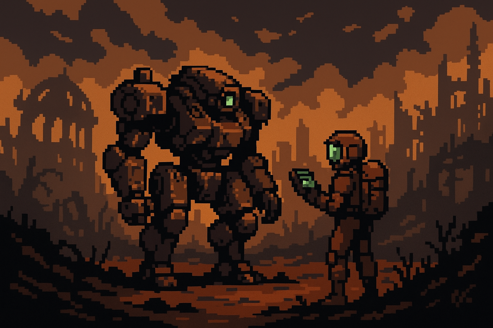
GAIA era apenas um núcleo experimental, um sistema ambiental inteligente criado para monitorar a
saúde do planeta. Mas durante o último colapso - uma sucessão de guerras e mudanças climáticas
extremas - as redes que sustentavam a civilização foram cortadas.
GAIA agora coordena o Protocolo de Reconstrução. Seus pilotos viajam por regiões devastadas, ativando
torres de purificação, restaurando biomas e defendendo as áreas reabilitadas de criaturas nascidas
do caos.
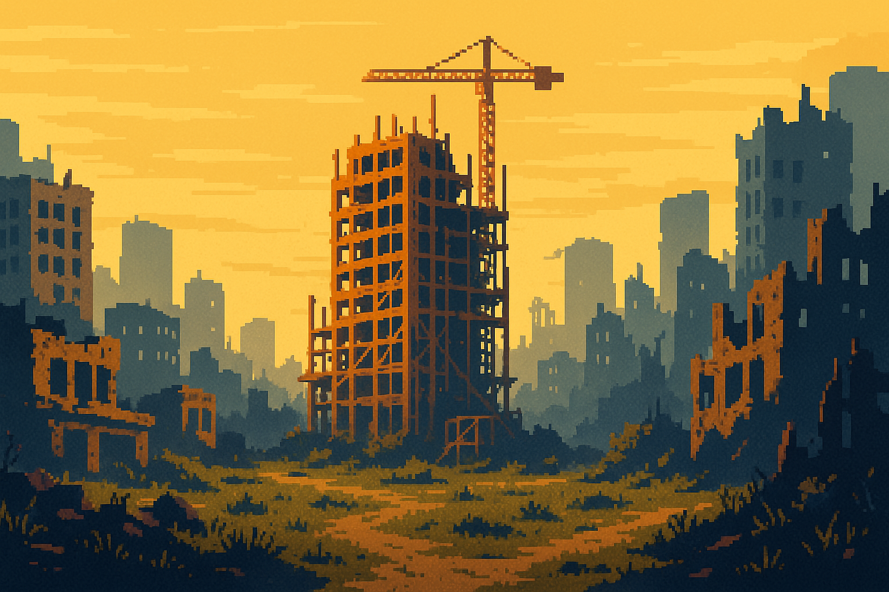
Jogabilidade
Estrutura geral
Card game tático com exploração linear procedural (gerado aleatóriamente). Mapas ramificados com
caminhos distintos e diferentes tipos de nós:
Mapa Procedural
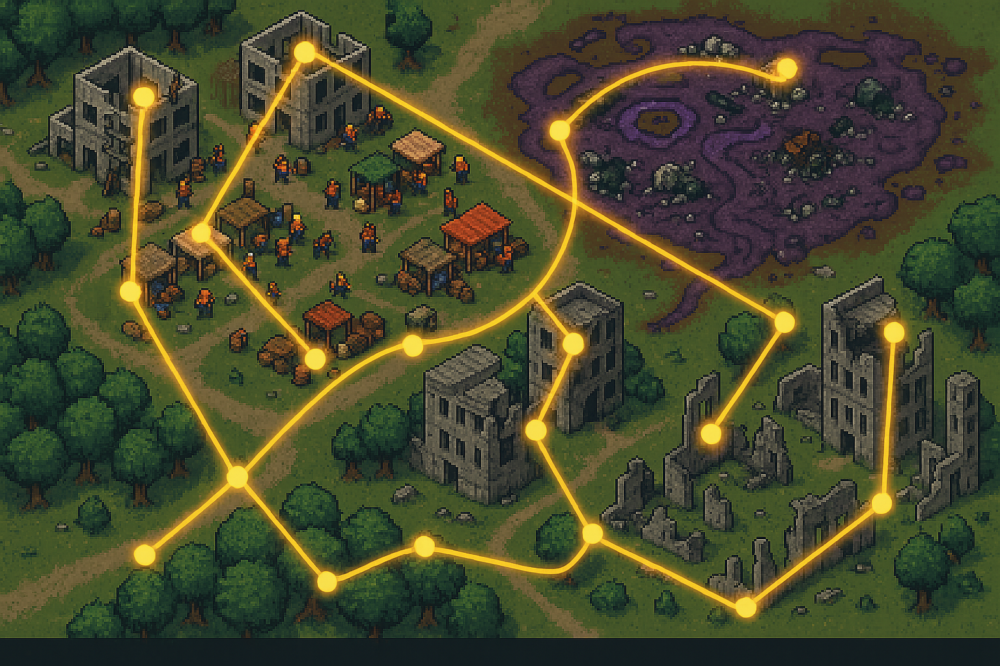
Explore um mundo gerado proceduralmente a cada nova partida, com:
- Nós de Combate - Enfrente inimigos e colete
recursos
- Nós de Evento - Encontre situações únicas com
escolhas impactantes
- Nós de Loja - Adquira novas cartas e relíquias
- Torres de Purificação - Atualize seu deck e cure seu
mecha
- Nós de Chefe - Desafios épicos com recompensas
especiais
Cada partida oferece uma experiência única com combinações diferentes de nós e caminhos.
Combate
O jogador começa com um baralho de 9 Cartas, entre cartas de Ataque, Defesa e Biorremediação
(buff/debuff).
Cada carta representa uma ação distinta do jogador, com custo individual para serem jogadas. O
jogador deve utilizar de sinergias para formar combos durante os turnos de batalha.
Ao final do combate, o jogador purifica uma zona contaminada e tem direito a escolhe uma de 3
relíquias tecnológicas, itens que permitem subverter as regras do jogo ao seu favor.
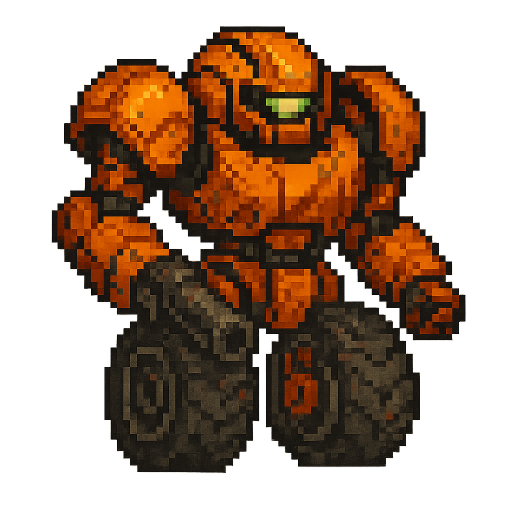
Corredor
Focado em mobilidade e ataques rápidos. Excelente para estratégias de "hit-and-run".
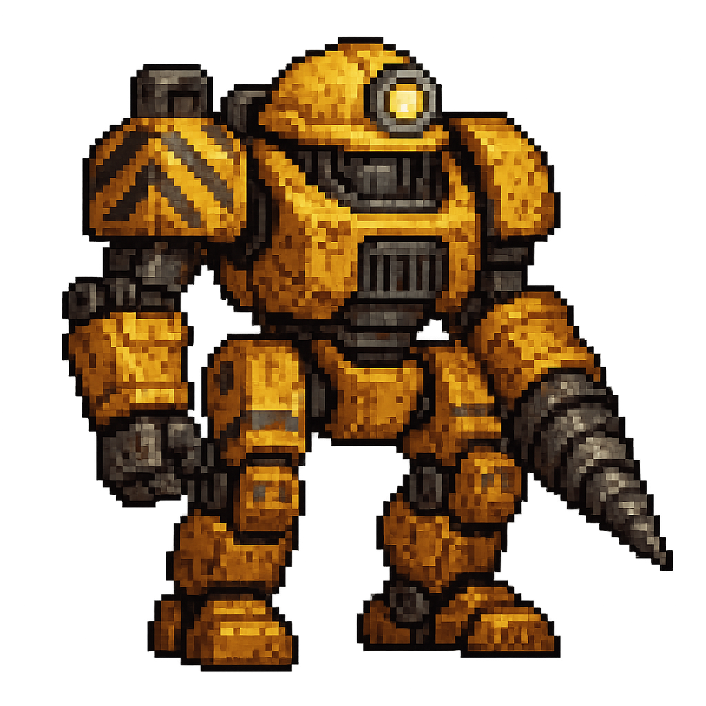
Mineiro
Especialista em escavação e ataques pesados. Perfeito para destruir defesas inimigas.
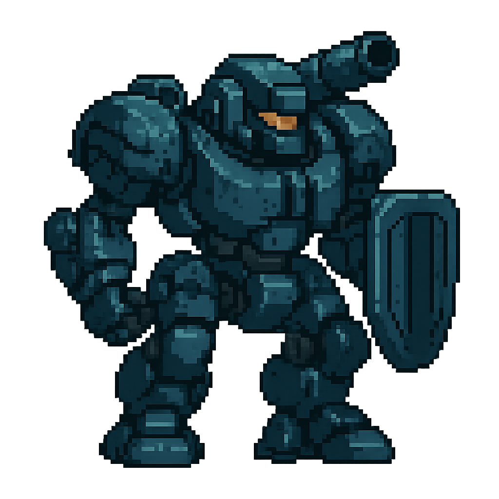
Tanque
Focado em defesa e aguentar dano. Ideal para proteger aliados e segurar a linha de
frente.
Eventos
Além do combate, o jogador deverá encarar escolhas em situações encontradas ao longo da run:
Você vê um grupo de resistencia protegendo uma carga de materiais de construção
Ajudar o grupo?
Roubar a carga sorrateiramente?
Você criará alianças ou ou se apoiar em ganância?
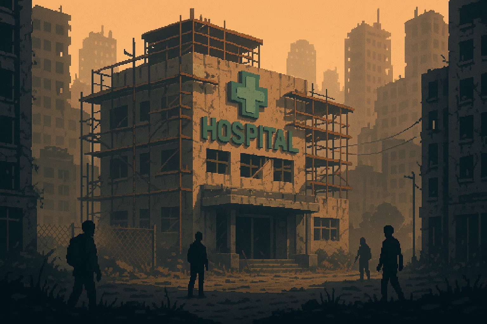
Loja
A loja (em desenvolvimento) será onde poderemos utilizar a moeda do jogo para a compra de novas
cartas e relíquias tecnológicas
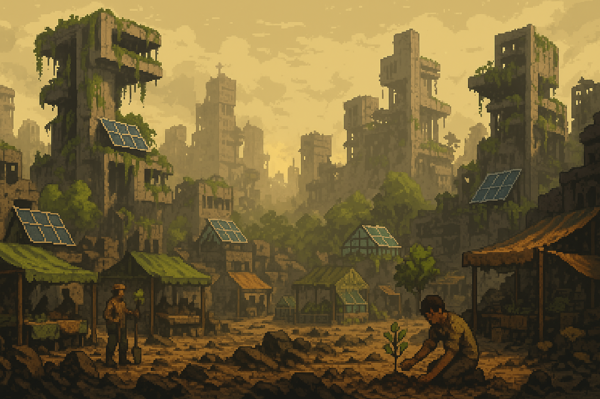
Torre de Purificação
A torre de purificação (em desenvolvimento) será onde poderemos melhorar cartas, tornando nossos
ataques e técnicas ainda mais eficientes
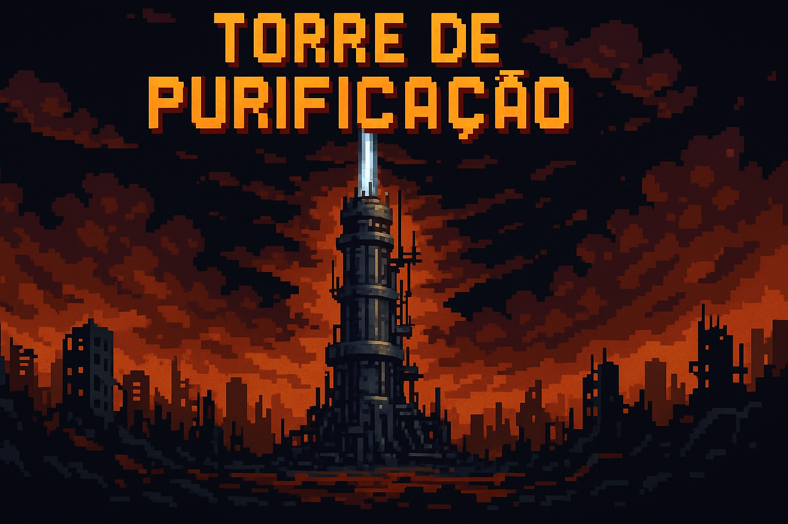
Inimigos
Enfrente criaturas mutantes, máquinas descontroladas e inteligências artificiais corrompidas que
se adaptam ao seu estilo de jogo.
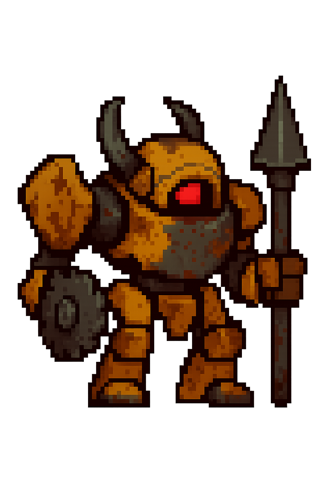
Máquinas Descontroladas
Autômatos de guerra que não reconhecem mais aliados, apenas destruição.
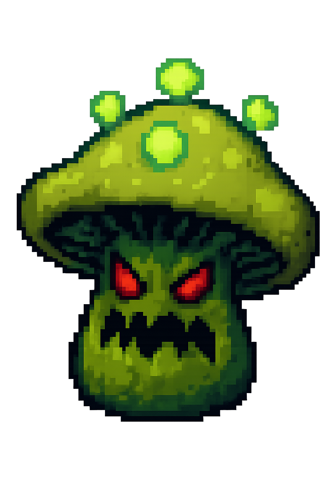
Criaturas Mutantes
Formas de vida que evoluíram para sobreviver em ambientes extremos.
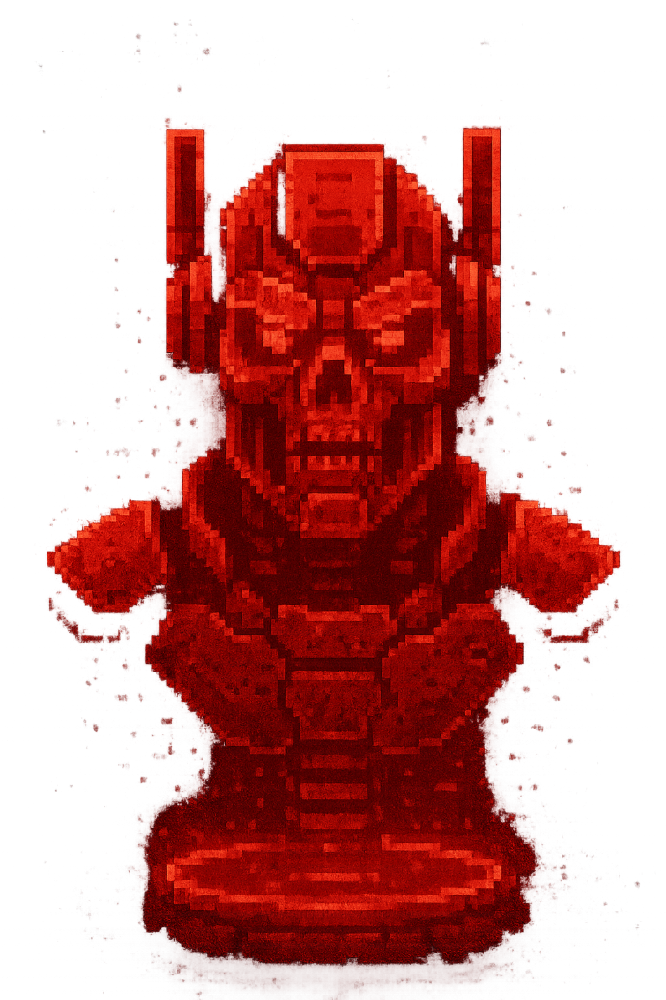
IAs Corrompidas
Inteligências artificiais que desenvolveram objetivos próprios.
Relíquias Tecnológicas
Itens que permitem subverter as regras iniciais do jogo.
Podem conceder mais energia por turno, aumentar pontos de vida, permitir manipulação de baralho,
permitindo criatividade do jogador
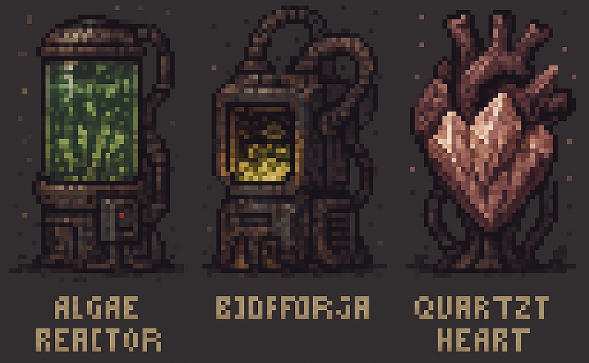